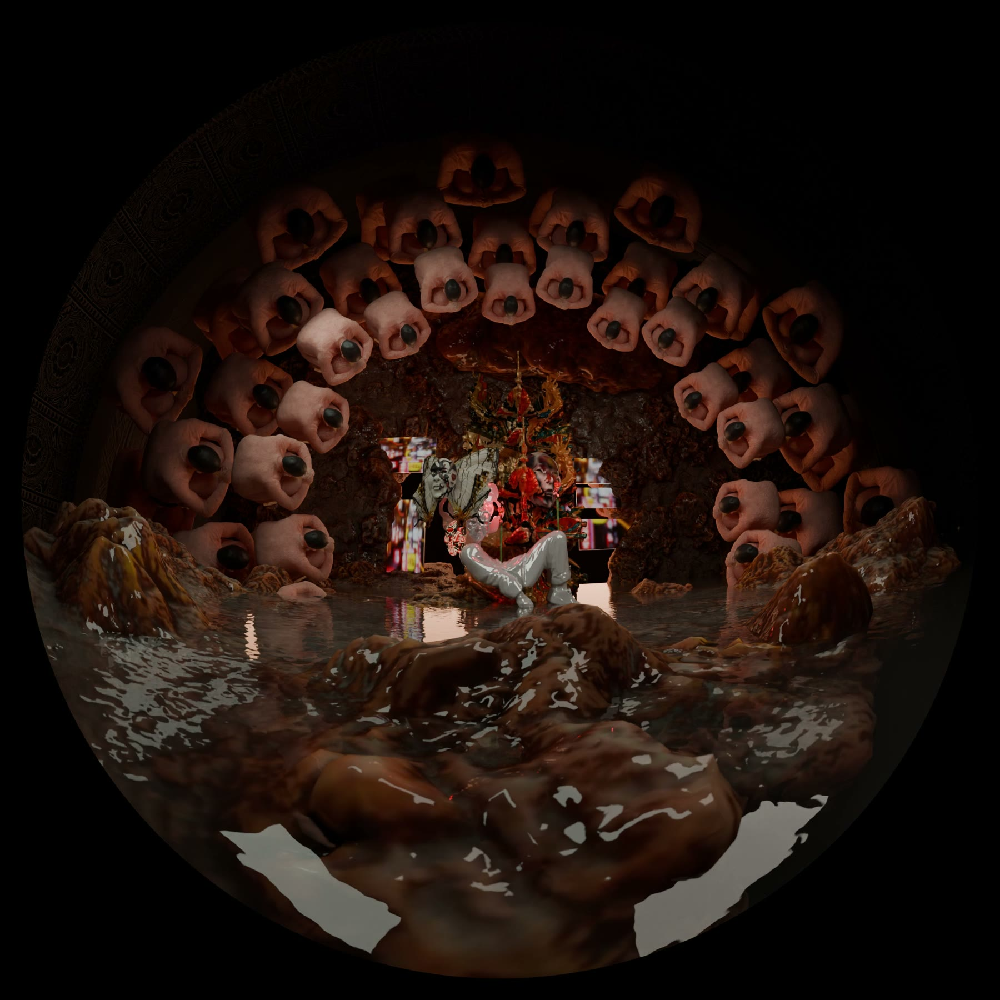

Production work — 2025
協作專案Production work
其他創作者的作品，我只參與其中一部分製作。Other people's projects, where I worked on one part of the production.
宇宙寫生Cosmic Sketches
我負責：《日光域》影像內容生成與現場布展。My part: Generated image content for Solar, and installation on site.


回聲室Echo Chamber
我負責：協助控制系統的 TouchDesigner 開發與測試。My part: Helped develop and test the control system in TouchDesigner.


穹頂計畫視覺示意Dome project visuals
我負責：穹頂畫面的視覺示意 render。My part: Visual concept renders for the dome.
